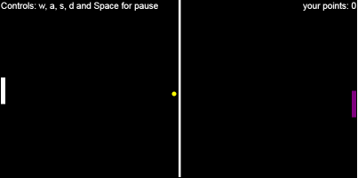

Olá me chamo Antony, sou programador,
e provavelmente ainda iremos trabalhar juntos!
Aqui estão algumas da minhas habilidades ;)

HTML 5 e suas melhores práticas de semântica!

CSS 3 e da sua base as técnicas mais usadas como Flexbox, Grid e Clip-path

Javascript/Ecmascript 2018 e seus principios, orientação a objetos, manipulação do DOM e Canvas

Principais funções do Git/Github
Aqui estão algumas dos meus projetos ;)
Instafonts.me foi um site que fiz com o intuito de reuniar as principais fontes usadas no instagram, e conseguir transformar qualquer texto para elas.
Um modelo de phishing iframe do facebook. Aqui o link.

Ping Pong usando o Canvas. Aqui o link... Cuidado com o rage :)
Um layout de página de homenagem. Aqui o link.
Também tenho outros projetos em meu Github.